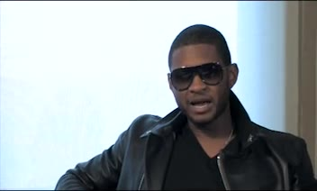
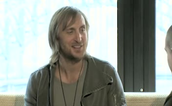
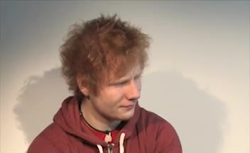
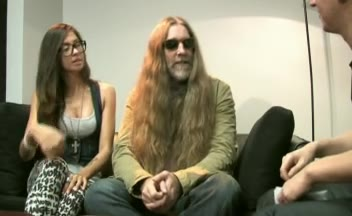
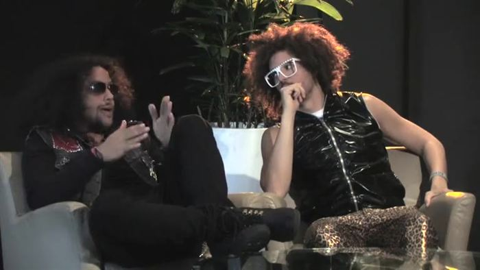
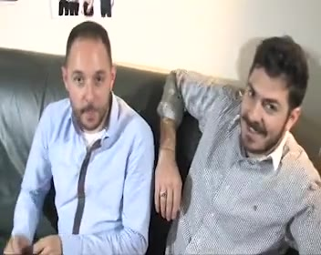
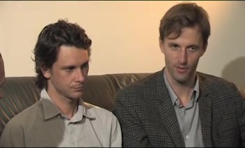
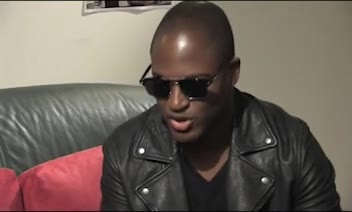
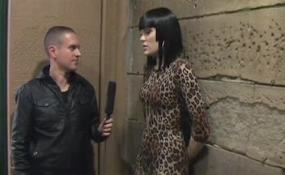

Video Interviews

Usher interview for Vodafone Central

David Guetta interview for Vodafone Australia

Ed Sheeran interview for Vodafone Central

Tommie Sunshine interview

LMFAO interview for Vodafone Australia

Pitbull interview for Vodafone Central

Bag Raiders interview

Itchee & Scratchee for Planet 3

Cut Copy Interview for Planet 3

Taio Cruz interview for Vodafone Central

Jessie J interview for Vodafone Australia
Pnau interview for Vodafone Central